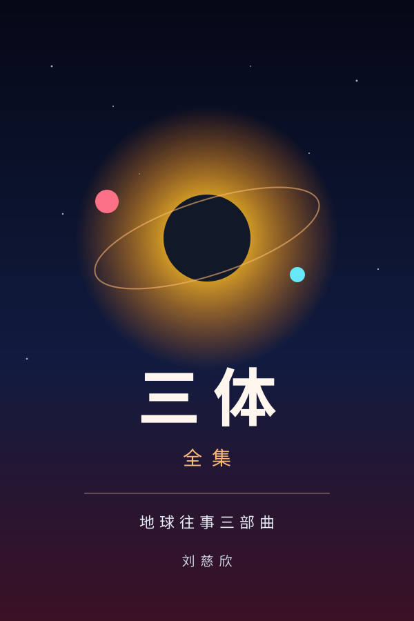
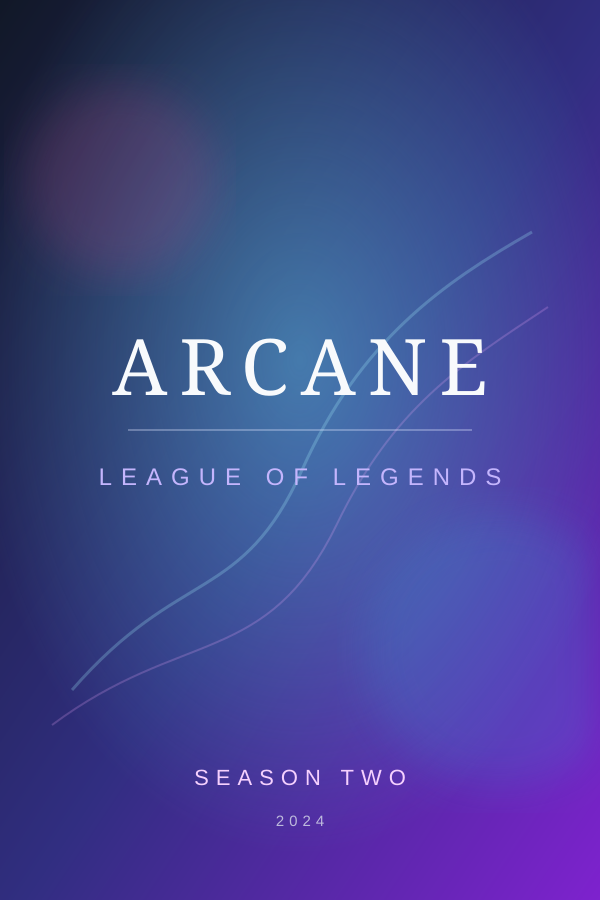

Shelf Books, films, and music I love. Books Ideals, Varieties, and Algorithms Cox, Little & O'Shea · 4th ed.  三体全集 刘慈欣 · 地球往事三部曲 Films & Series Spider-Man: Across the Spider-Verse Film · 2023 The Prestige Film · 2006 True Detective Season 1 · 2014 Person of Interest Season 5 · 2016 La La Land Film · 2016  Arcane Season 2 · 2024 Better Call Saul Season 1 · 2015 Green Book Film · 2018